SC remote HEAD read back November17 is11de067414e63c5d3e3e221dfc14cc026dfbd8d0, matching inspected components. Fresh public SC renders are in reference/; two clearly dated November16 public-demo captures supplement them. No stock mockups or reconstructed production screens. The authenticated Parent Portal redirects to sign-in. Public demo source uses synthetic data; it is not an authorized production session. fresh HTTP/browser readback · actual public-demo navigation · source reuse
Club / team selection
SC public connected-club demo has five dependent club→program→age→team→player selectors. AP discovery uses search/location/age/type and a reviewed list, then an explicit athlete association; no forced recruiting. This is comparable decision clarity, not identical flow.
Soccer Center — actual public reference / explicit boundary Arena Pathway — actual completion candidate
Arena Pathway — actual completion candidate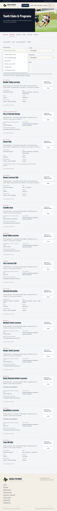
Athlete onboarding
SC authenticated creation is blocked by sign-in; the inspected player-create source verifies guided stages. AP exercises six creation steps and opens the completed profile. The left image is the actual authentication boundary, not a fabricated SC wizard.
Soccer Center — actual public reference / explicit boundary Arena Pathway — actual completion candidate
Arena Pathway — actual completion candidate
Athlete profile
Both keep athlete identity, team and tactical tabs. AP adds the approved continuous story, education, achievements, selected media and performance rail. AP uses original collegiate gradients/typography and honest initials without invented ratings.
Soccer Center — actual public reference / explicit boundary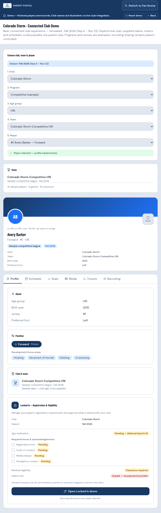
Arena Pathway — actual completion candidate Calendar / scheduling
SC public demo shows fictional club-supplied commitments; AP has user-entered recurrence, one-time competition and four views. AP family calendar derives the same event references. No authenticated provider synchronization is claimed.
Soccer Center — actual public reference / explicit boundary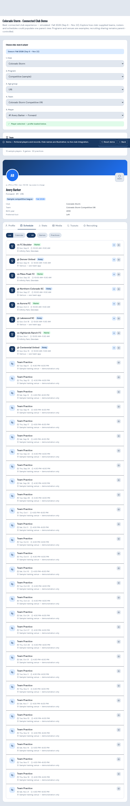
Arena Pathway — actual completion candidate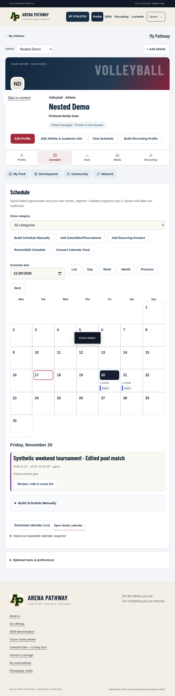
College search
SC public recruiting research shows a synthetic sample program and its standard tabs/filters. AP uses reviewed sport-specific program records, explicit incomplete coaching coverage and the adapted research hierarchy. No soccer coach is repurposed.
Soccer Center — actual public reference / explicit boundary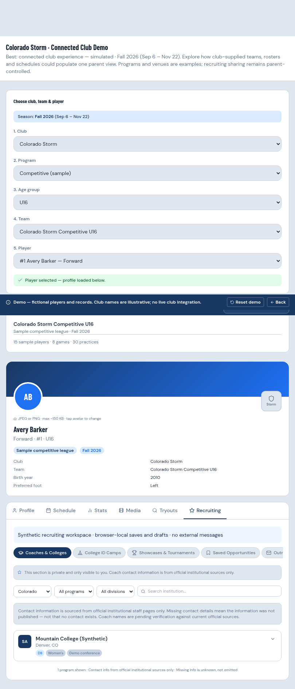
Arena Pathway — actual completion candidate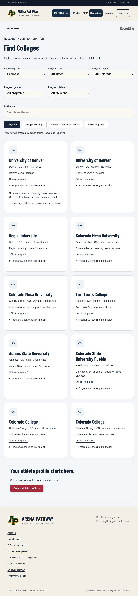
Recruiting information
SC public builder is a single information form followed by sharing. AP intentionally implements the approved profile-first focused sections, independently saved before visual composition. Initial decisions are information, presentation, preview, saved profile; permission details are secondary.
Soccer Center — actual public reference / explicit boundary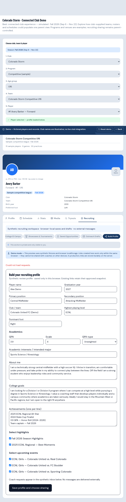
Arena Pathway — actual completion candidate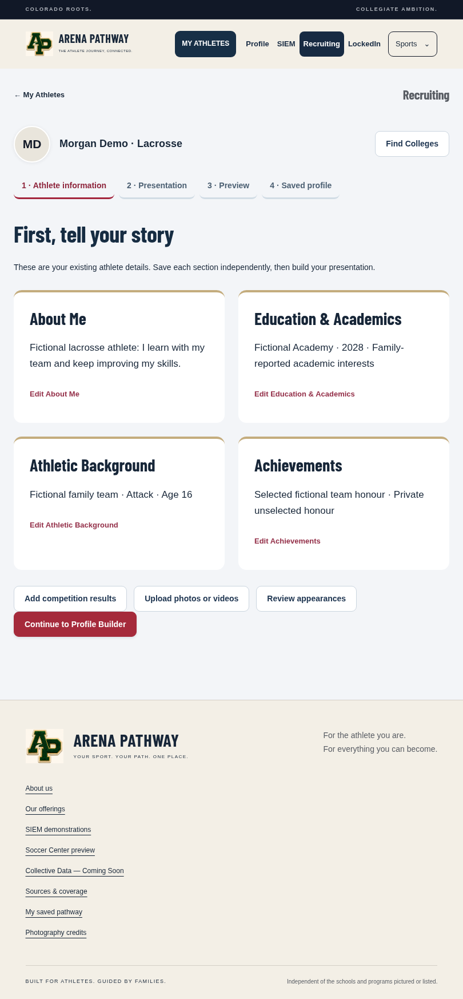
Parent-controlled composition
Left is an actual November16 SC public-demo composition capture at the same source HEAD, not a reconstructed fixture; protected production composition remains unverified without authentication. AP shows content sections, owned items and collapsed detail choices; selection retains focus/scroll.
Soccer Center — actual public reference / explicit boundary Arena Pathway — actual completion candidate
Arena Pathway — actual completion candidate
Finished coach-facing portfolio
Left is an actual November16 public synthetic SC card at the unchanged source HEAD. Both have identity, selected academics, performance and highlights. AP adds original collegiate portfolio hierarchy and local save/reopen/rebuild. Neither this comparison nor local AP approval certifies secure external sharing.
Soccer Center — actual public reference / explicit boundary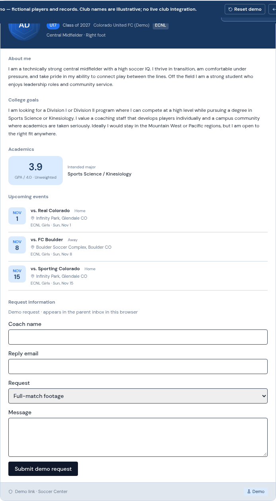
Arena Pathway — actual completion candidate
Media gallery
SC public media demo shows its actual empty gallery/collection controls. AP fictional owned media appear in Featured Media and the gallery, with competition-only normal association and selected recruiting reuse. An empty reference is not evidence that production SC lacks media.
Soccer Center — actual public reference / explicit boundary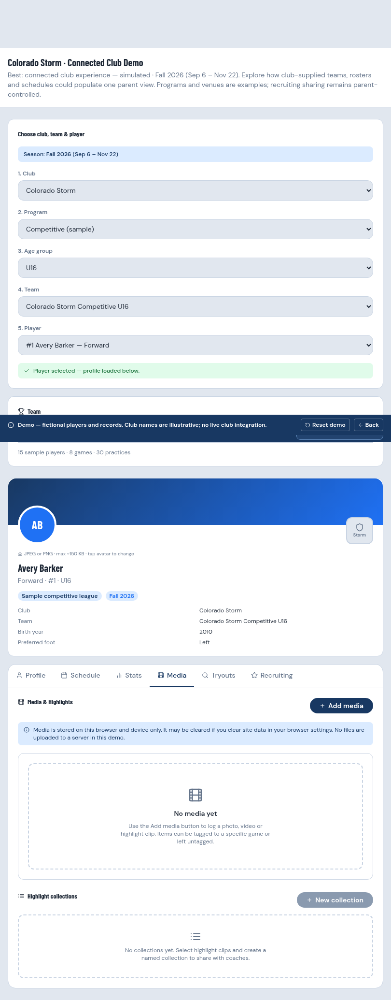
Arena Pathway — actual completion candidate Editorial feeds
SC public homepage demonstrates editorial hierarchy, not authenticated per-user source settings. AP reviewed My Feed cards use attributed headlines, permitted AP illustration labeled as such, and intentional fallbacks. Snapshot/live and image-rights boundaries remain explicit.
Soccer Center — actual public reference / explicit boundary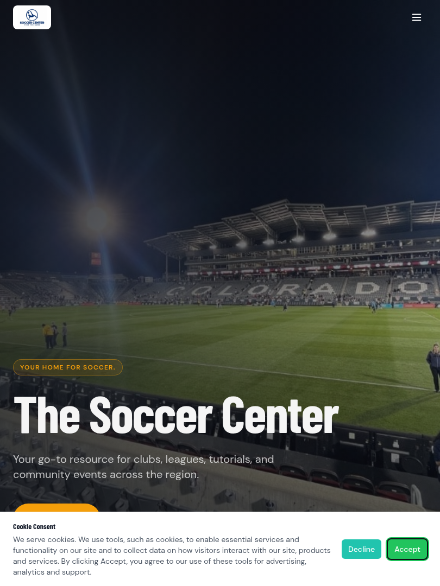
Arena Pathway — actual completion candidate
Internal product assessment: AP now follows coherent family→athlete→optional portfolio navigation, identity-first information hierarchy and predictable saved outcomes. It retains a distinct brand rather than reproducing SC colors or layouts. The remaining differences are the original AP story-led layout, browser-local storage, incomplete verified coaching/imagery coverage, and the unavailable authenticated SC production comparison. Founder visual acceptance remains a user decision; no authenticated production parity or enterprise readiness is claimed.